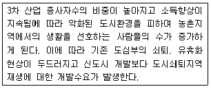
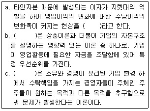
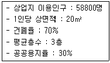
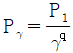
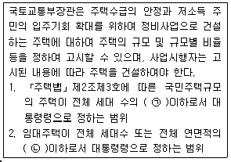

도시계획기사 (2013-06-02 기출문제)
1과목: 도시계획론
1. 도시재개발사업의 문제점과 개선방안에 대한 설명이 틀린 것은?
- 상위계획에 입각한 일관성 있는 정책이기보다 행정 편의 위주의 대책으로 시행된 경우가 많았다.
- 주로 지구 단위의 미시적 관점에서 진행되어 주변 지역과 전체 도시와의 체계성이 상실되고 있다.
- 토지이용의 고도화를 위해 초고층 업무 상업기능 위주로 진행되어 다양한 도시문제를 양산하고 있다.
- 도심재개발사업의 활성화와 주거환경의 개선을 위해 복합용도개발보다는 순수한 주택단지 계획기술의 개발에 힘쓸 필요가 있다.
(정답률: 79%)

2. 도시의 물리적 계획의 3대 요소가 아닌 것은?
- 시설
- 밀도
- 배치
- 동선
(정답률: 78%)
3. 토지이용과 교통체계 간의 관계에 대한 설명이 틀린 것은?
- 도시 내에서 토지이용과 교통체계는 상호 밀접하게 작용하는 ‘체인(chain)'과 같은 관계다.
- 도시개발을 통한 토지이용상태의 변화는 통행을 유발한다.
- 교통수요의 증가는 토지이용에 영향을 주어 지가상승의 요인이 된다.
- 교통시설의 확충은 토지이용에 부정적인 외부효과만을 증가시킨다.
(정답률: 94%)
4. 지역 내의 조망대상을 한 눈에 조망할 수 있고 시계의 범위가 넓으며 파노라마적인 경관을 감상할 수 있는 경관유형은?
- 부감경
- 양감경
- 수평경
- 입체경
(정답률: 90%)
5. 인구가 정률 변화를 할 때 적합하며, 인구가 기하급수적인 증가를 나타내고 있어 단기간에 급속히 팽창하는 신도시의 인구 예측에 유용하나 인구의 과도 예측을 초래할 위험성이 있는 인구예측모형은?
- 선형모형
- 지수성장모형
- 로지스틱모형
- 곰페르츠모형
(정답률: 87%)
6. 다음 중 지속가능한 개발(발전)을 위한 선언문이 아닌 것은?
- 리우선언문
- 지방의제(Agenda)21
- 요하네스버그 선언문
- 카를스바트 결의
(정답률: 64%)
7. 도시계획의 다양한 수법에 대한 설명이 틀린 것은?
- 뉴어바니즘(New Urbanism)은 자동차 위주의 도시계획에서 사람중심의 도시환경을 도시계획적으로 적용하는 운동으로, 보행자 이외의 개인 및 대중교통수단을 배제한다.
- 에코시티(Eco-City)는 환경적으로 건전하고 지속가능한 개발을 위해 환경보전과 개발을 조화시켜 도시를 조성하고자 한다.
- 압축도시(Compact City)는 집중된 개발을 통하여 도시의 통행수요 및 에너지 사용을 감소시키는 도시형태로 고밀개발을 통한 직주근접을 도모한다.
- U-City는 언제 어디서나 편리하게 도시네트워크를 이용하고 정보를 얻을 수 있는 새로운 형태의 미래형 도시이다.
(정답률: 93%)
8. 옹호적 계획(Advocacy Planning)에 대한 설명이 틀린 것은?
- 다비도프(Davidoff)에 의해 주창된 옹호적 계획은 피해 구제 절차(Adversary procedures)와 같은 사회제도를 계획 개념으로 수용한 것이라고 할 수 있다.
- 계획의 직접적 영향을 받는 사람들조차도 무관심한 계획안으로부터 발생할 수 있는 이익을 주민의 관점에서 옹호한다.
- 이론상으로 사회는 너무 많은 차원의 가치가 혼재하고 있는 공간이기 때문에 복수의 다원적인 계획보다는 단일 계획안을 수립하는 것이 바람직하다고 본다.
- 계획이 일방적으로 공공의 이익을 규정하는 전통을 타파하는데 성공적이었다.
(정답률: 85%)
9. 지리정보시스템(GIS)에 대한 설명으로 옳지 않은 것은?
- GIS의 자료는 도형자료(graphic data)와 속성자료(attribute data)로 구분할 수 있다.
- GIS를 도시계획분야에 적용하고자 하였으나, 관련 자료의 취득이 어려워 현재 시스템 적용이 어렵다.
- GIS는 지리적 공간상에서 실세계의 각종 객체들의 위치와 관련된 속성정보를 다루는 것이다.
- GIS의 공간자료를 토지 측량, 항공 및 위성사진 측량, 범세계 위치결정체계(GPS)를 사용하여 수집할 수 있다.
(정답률: 86%)
10. 4단계 교통수요추정법에 해당하지 않는 단계는?
- 통행발생
- 수단선택
- 통행배분
- 통행평가
(정답률: 84%)
11. 주택지의 말단부에서는 자동차와 사람이 공존하는 것이 더 바람직하며, 주택지내 도로는 단순한 교통시설이 아니라 시민생활의 터전이 되어야 한다는 생각으로 네덜란드의 델프트에서 처음 등장한 보차공존도로 방식은?
- 본엘프(woonerf)
- 커뮤니티몰(community mall)
- 거주환경지역(environmental area)
- 보행자데크(pedestrian deck)
(정답률: 94%)
12. 국토의 계획 및 이용에 관한 법률상 미관을 유지하기 위하여 지정하는 용도지구는?
- 보존지구
- 주차장정비지구
- 미관지구
- 고도지구
(정답률: 92%)
13. 산업성장의 요인에 따른 변이할당분석에서 지역경제의 총변화(Total Share)가 50, 국가경제 성장효과(National Share)가 45, 도시경쟁력에 의한 효과(Local Factor)가 -10일 때, 산업구조효과(Industry Mix)는 얼마인가?
- -5
- 5
- -15
- 15국내유일
(정답률: 82%)
14. 도심공동화로 인해 나타나는 현상으로 옳은 것은?
- 직주근접현상 발생
- 주거환경의 개선
- 기성시가지의 활성화
- 야간인구의 격감
(정답률: 71%)
15. 그리스의 건축가이며 도시계획가인 히포다무스는 도시계획에 관한 3조이론을 제안하였다. 여기서 3개조로 이루어진 건물집단 및 지구와 도로배치를 구분하기 위해 구성된 시민계급을 구성하는 집단이 아닌 것은?
- 사제집단
- 농부집단
- 무장한 군인집단
- 예술가 집단
(정답률: 83%)
16. 주거, 상업, 공업 등의 용도에 따른 규제가 아니고 실제의 토지이용에 기초하여 발생하는 각종 결과를 주변에 대한 영향에 따라 규제하고자 하는 방식은?
- 유도지역제
- 계획단위규제
- 성능지역규제
- 혼합지역제
(정답률: 66%)
17. 토지이용계획을 실현하기 위하여 강제적 수단을 통한 용도지역의 규제내용이 아닌 것은?
- 용도의 규제
- 건폐율의 규제
- 건축물의 소유권 제한
- 건축물의 높이 제한
(정답률: 88%)
18. 도시인구의 증가 속도가 도시산업의 발달 속도보다 훨씬 커서 직장과 주택이 없는 사람들이 도시 빈민화하고 슬럼지구를 형성하며, 이들이 생존을 위해 비공식 경제부문에 종사하는 등 도시 경제의 잉여 부분에 기생하면서 살아가야 하는 현상을 무엇이라고 하는가?
- 젠트리피케이션
- 역도시화
- 가도시화
- 종주도시화
(정답률: 88%)
19. 토지이용계획의 역할로 옳지 않은 것은?
- 도시의 외연적 확산을 촉진시킨다.
- 토지이용의 규제와 실행수단을 제시해 준다.
- 계획적인 개발을 유도하여 난개발을 억제시킨다.
- 도시의 현재와 장래의 공간구성과 토지이용 형태가 결정된다.
(정답률: 96%)
20. 도시지역과 그 주변지역의 무질서한 시가화를 방지하고 계획적ㆍ단계적인 개발을 도모하기 위해 일정 기간 시가화를 유보하기 위해 지정하는 용도구역은?
- 개발제한구역
- 도시자연공원구역
- 계획관리구역
- 시가화조정구역
(정답률: 89%)
2과목: 도시설계 및 단지계획
21. 학교의 결정기준과 관련한 규정상 새로이 개발되는 지역의 경우 몇 세대를 기준으로 근린주거구역으로 하는가? (단, 도시ㆍ군계획시설의 결정ㆍ구조 및 설치기준에 관한 규칙에 따름)
- 2천 세대 내지 3천 세대
- 3천 세대 내지 4천 세대
- 4천 세대 내지 5천 세대
- 5천 세대 내지 6천 세대
(정답률: 90%)
22. 각 가구를 잇는 도로가 하나이며 막다른 도로의 형태로 통과교통을 최소화하고, 부정형한 지형에 적용이 용이하며 주거환경의 쾌적성과 안전성을 용이하게 확보할 수있는 국지도로의 형태는?
- 십(+)자형
- 쿨데삭(Cul-de-Sac)
- T자형
- 격자형
(정답률: 92%)
23. 다음 중 근린주구(Neighborhood Unit)와 관련이 없는 것은?
- 페리(C. A. Perry)
- 스타인(Clarence S. Stein)
- 래드번(Radburn) 계획
- 아디케스(F. Adickes)
(정답률: 89%)
24. 우리나라의 도시설계관련 제도에 대한 설명이 틀린 것은?
- 우리나라의 도시설계는 독일의 지구상세계획(B-Plan), 일본의 지구계획제도의 영향을 받아 제도화되었다.
- 1980년대에는 건축법에 도시설계 관련 규정이 처음 포함되었다.
- 1990년대에는 건축법에 상세계획제도가 도입되었다.
- 2000년 도시계획법 개정을 통해 지구단위계획제도가 도입되었다.
(정답률: 66%)
25. 케빈 린치(Kevin Lynch)가 제안한 도시를 이미지화하는 물리적 구조에 관한 요소가 아닌 것은?
- 통로(Path)
- 가장자리(Edge)
- 결절점(Node)
- 조경(Landscape)
(정답률: 94%)
26. 건폐율 60%, 용적률 540%를 적용할 경우 최대층수는? (단, 각 층의 평면이 동일한 경우이다.)
- 3층
- 5층
- 9층
- 14층
(정답률: 93%)
27. 건축물의 배치 계획에 관한 용어의 설명이 옳은 것은?
- 공개공간이란 지표면과 맞닿는 층에서 필로티 구조로 조성된 공지를 말한다.
- 건축지정선은 건축물을 도로에서 일정 거리 후퇴시켜 건축하게 할 필요가 있는 곳에 지정한다.
- 쌈지형 공지란 일반 대중에게 특정 시기에 개방하고, 교목, 벤치 등을 일체 설치할 수 없는 공지를 말한다.
- 침상형 공지란 지하공공보행통로와 연결되는 지하부분의 대지 내 공지를 말한다.
(정답률: 39%)
28. 주거단지 계획 시 자연ㆍ환경적 요소의 고려가 옳지 않은 것은?
- 지형(등고선)을 고려하여 건물의 배치를 결정하였다.
- 여름철 과다한 일조를 피하기 위해 인동간격을 축소하였다.
- 여름철 바람 방향을 개방할 수 있도록 도로와 건물을 배치하였다.
- 토양이나 식생이 덮인 지표면을 확대하여 온도와 습도를 조절하였다.
(정답률: 93%)
29. 지구단위계획에서의 공동개발 및 합벽건축에 대한 설명으로 틀린 것은?
- 미관개선만을 목적으로 하는 공동개발 또는 합벽건축의 지정은 피한다.
- 교통혼잡을 유발하는 대규모 시설이 입지하지 못하도록 필요한 경우에는 대지규모의 상한 기준을 설정하여 적정규모의 공동개발이 되도록 유도한다.
- 대지의 규모와 형상. 주변 상황등을 고려하여 공동개발을 권장하거나 억제하는 등 다양한 수법을 제시할 수 있다.
- 공동개발의 계획수립은 주민의 의견보다는 전문가의 미래 예측 능력과 주관적인 판단이 가장 중요하다.
(정답률: 94%)
30. 주택단지 계획 시 주택용지율을 70%, 총 인구밀도를 210인/ha로 한다면 이곳의 순 인구밀도는?
- 147 인/ha
- 210 인/ha
- 300 인/ha
- 333 인/ha
(정답률: 81%)
31. 공동구의 설치로 인한 장점이 아닌 것은?
- 도시미관의 향상
- 방재효율의 향상
- 설비 갱신의 용이
- 초기 설치비용의 절감
(정답률: 88%)
32. 다음 중 토지이용계획을 수립함에 있어 정량적인 예측 변수에 해당하지 않는 것은?
- 가구규모
- 인구규모
- 생활양식의 변화
- 고용자수
(정답률: 88%)
33. 상업시설용지의 배치유형을 집중형과 노선형으로 구분할 때, 집중형에 비해 노선형이 갖는 특징으로 틀린 것은?
- 자동차 위주의 접근을 유도한다.
- 단일 목적의 활동이 일어나는 겅시 기대될 때 적용한다.
- 도시미관이 손상될 우려가 있다.
- 도로와 거주지 사이의 소음을 완충하는 역할을 한다.
(정답률: 53%)
34. 지구단위계획구역의 지정 및 지구단위계획 수립을 위해 실시하여야 하는 기초조사를 하지 아니할 수 있는 경우 기준이 아닌 것은?
- 당해 지구단위계획구역이 도심지(상업지역과 상업지역에 연접한 지역)에 위치하는 경우
- 당해 지구단위계획구역의 지정목적이 당해 구역을 정비 또는 관리하고자 하는 경우로서 지구단위계획의 내용에 너비 10미터 이상의 도로의 설치계획이 없는 경우
- 당해 지구단위계획구역 또는 도시ㆍ군계획시설부지가 다른 법률에 따라 지역ㆍ지구ㆍ구역ㆍ단지 등으로 지정되거나 개발계획이 수립된 경우
- 당해 지구단위계획구역안의 나대지면적이 전체구역 면적의 2%에 미달하는 경우
(정답률: 64%)
35. 복층형 주택(메조네트, maisonnette) 형식에 대한 설명으로 틀린 것은?
- 1개 주호가 2개층을 사용하는 경우 duplex라고 한다.
- 단면 형태가 복잡해져 구조, 설비 등의 구성 및 설계에 세심한 고려가 필요하다.
- 일반적으로 작은 규모(약 132m2) 이하)의 주거형식으로 적합하다.
- 공용복도가 없는 층에서는 직통 두 방향으로 개구부를 둘 수 있어서 통풍과 채광에 유리하다.
(정답률: 77%)
36. 슈퍼블럭에 관한 설명으로 틀린 것은?
- 1960년대 이후 영국의 주택이론가들에 의해 창안되었다.
- 충분한 공동의 오픈스페이스를 확보할 수 있다.
- 불필요한 도로의 면적을 줄이고 보차 분리가 가능하다.
- 대형 건물, 집합주택을 배치하기에 적당하다.
(정답률: 70%)
37. 단지계획 수립 시, 각 지역 규모의 산출 계수에 해당하지 않는 것은?
- 공공용지율
- 지역생산가동율
- 각 산업별 종사자수와 점유인구 1인당 소요 면적
- 건폐율
(정답률: 78%)
38. 공원 및 녹지체계의 유형 중 녹지의 연결성과 접근성의 측면에서 바람직하다고 볼 수 있으나, 한정된 녹지가 넓은 면적에 분포하게 되어 녹지의 폭이 좁아지는 단점이 있는 것은?
- 단지 녹지를 한곳으로 모으는 집중형
- 단지내 녹지를 고르게 분포시키는 분산형
- 일정폭의 녹지를 길게 조성하는 대상형
- 대상형 가로, 세로로 겹쳐 놓은 격자형
(정답률: 40%)
39. 공공적 성격이 강하여 특별히 확보해야 하는 시설의 경우, 특화거리 또는 단지조성의 경우에 적용하는 용도제한의 종류 구분에 해당하는 것은?
- 지정
- 권장
- 불허
- 지하층
(정답률: 85%)
40. 오픈스페이스(open space)에서 시민이 누릴 수 있는 것과 거리가 먼 것은?
- 자유감
- 자발적 활동
- 새로운 생활환경의 접촉
- 제한된 도시생활의 연속
(정답률: 91%)
3과목: 도시개발론
41. 재개발의 일반적인 목적으로 옳지 않은 것은?
- 주택 및 물리적 시설의 불량ㆍ노후화의 개선과 예방
- 다양한 공공시설과 서비스의 적정한 배치 및 공급
- 경제적 효율성의 확대 방지
- 주민의 사회경제적 조건 향상과 공동체적 삶의 질 향상
(정답률: 88%)
42. 기업금융과 대별되는 프로젝트파이낸싱에 대한 설명으로 옳은 것은?
- 비소구금융 및 부외금융의 특성을 갖는다.
- 상환 재원은 사업주의 전체 재원을 기반으로 한다.
- 공공기관 입장에서는 사업위험의 분산 효과가 작다.
- 민간의 입장에서는 기업금융에 비하여 금융비용의 절감이 불가능하다.
(정답률: 79%)
43. 다음 중 개발권양도제에 대한 설명이 틀린 것은?
- 개발유도지역의 지가수준이 높거나 토지이용규제가 강하면 개발권에 대한 수요가 줄어 든다.
- 도시의 성장관리수법의 하나로 활용되는 제도이다.
- 공공이 토지소유주에게 용도 규제에 상응하는 토지주의 손실금액 만큼의 개발권을 부여한다.
- 개발권의 신축적인 운영을 위해 개발권수급은행의 운영을 고려할 수 있다.
(정답률: 62%)
44. 버그가 구분한 4단계의 도시화 단계 중 아래 설명에 해당하는 것은?

- 도시화단계(stage of urbanization)
- 교외화 단계(stage of suburbanization)
- 반도시화 단계(stage of deurbanization)
- 재도시화 단계(stage of reurbanization)
(정답률: 70%)
45. 도시개발법령에 따라 도시개발구역으로 지정할 수 있는 대상지역별 규모 기준이 틀린 것은?
- 도시지역 안 공업지역 - 3만m2 이상
- 도시지역 안 자연녹지지역 - 1만m2 이상
- 도시지역 안 주거지역 - 1만m2 이상
- 도시지역 외의 지역 - 50만m2 이상
(정답률: 81%)
46. 다음 중 주민참여형 도시개발의 유형으로 거리가 먼 것은?
- 개발협정(development agreements)
- 지분협약
- 주민투표
- 민간협약(covenants)
(정답률: 43%)
47. 환경친화적 도시개발을 실현하기 위해 선택할 수 있는 최선의 대안으로 적합하지 않은 것은?
- 개발물량의 최소화
- 환경훼손의 최소화
- 오염발생의 최소화
- 개발주체의 최소화
(정답률: 87%)
48. 생활환경을 저해할 원인이 있거나 구조적으로는 보존가능하나 유지관리가 불충분하게 행해지는 경우, 기존시설을 보존하면서 노후 및 불량화 요인만을 제거하는 재개발방식은?
- 전면재개발(Redevelopment)
- 개량재개발(Improvement)
- 수복재개발(Rehabilitation)
- 보전재개발(Conservation)
(정답률: 86%)
49. 도시의 외연적 확산이 도시개발에 주는 영향으로 가장 거리가 먼 것은?
- 통근 비용 증대
- 기반시설 투자 비용 확대
- 도심 공동화 유발
- 도시재생(Urban renewal) 촉진
(정답률: 85%)
50. 토지의 용도에 따른 도시개발 유형 구분에 해당하지 않는 것은?
- 복합단지개발
- 공업용지개발
- 유통단지개발
- 토지신탁개발
(정답률: 88%)
51. 「도시재정비 촉진을 위한 특별법」 상에 정의된 재정비 촉진사업에 포함되지 않는 것은?
- 「도시 및 주거환경정비법」에 따른 주거환경개선사업
- 「주택법」에 따른 주택건설사업
- 「국토의 계획 및 이용에 관한 법률」에 따른 도시ㆍ군계획시설사업
- 「전통시장 및 상점가 육성을 위한 특별법」에 따른 시장정비사업
(정답률: 50%)
52. 부동산펀드의 유형을 운용시장의 형태에 따라 구분할 때, 다음 중 민간시장(private market) 부문에 해당하지 않는 것은?
- 직접투자
- 사모부동산 펀드
- 상업용저당채권
- 직접대출
(정답률: 88%)
53. 도시개발의 과정에서 시장분석 시 전반적인 현황을 검토하기 위하여 SWOT 분석을 시도하기도 한다. 이 중 ‘어떤 대상지나 실체에게 외적으로 주어진 부정적인 측면’은다음 중 어느 것인가?
- 강점(Strength)
- 약점(Weakness)
- 기회요소(Opportinity)
- 위협요소(Threat)
(정답률: 81%)
54. 다음 ( )안의 내용이 순서대로 모두 옳은 것은?

- 재무레버리지효과, 자본조달순서이론, 대리인이론
- 지렛대 효과, 대리인이론, 자본조달순서이론
- 재무레버리지효과, 자금조달순서이론, 경영인이론
- 지렛대효과, 경영인이론, 자금조달순서이론
(정답률: 87%)
55. 대중교통중심개발(Transit Oriented Development, TOD)의 개념과 거리가 먼 것은?
- 복합고밀개발
- 보행거리 내 상업, 주거, 업무, 공공시설 배치
- 자동차에 대한 의존도 감소
- 주민참여의 극대화
(정답률: 79%)
56. 도시개발 실시 과정에서 매장 문화재의 출토, 환경오염 및 지역 주민 민원에 의한 공사중단, 추가 공사의 발생 등과 관련된 위험의 유형은?
- 시장위험(market risk)
- 재해위험(disaster risk)
- 금융위험(financial risk)
- 건설관련위험(construction risk)
(정답률: 91%)
57. 다음 중 지분조달방식의 일반적인 특징이 아닌 것은?
- 투자금액을 상환하지 않아도 된다.
- 회사 통제권을 일부 포기해야 한다.
- 지분투자자의 최대 관심사는 사업의 성장과 확장에 있다.
- 사업자가 현금이 긴요할 경우 선호되지 않는다.
(정답률: 80%)
58. 다음의 경우 상업용지의 면적을 추계한 값이 옳은 것은?

- 800,000m2
- 1,000,000m2
- 1,020,400m2
- 1,120,000m2
(정답률: 67%)
59. 도시개발사업을 위한 민간 투자 유치 방법 중, 국가 또는 지방자치단체 소유의 기존시설을 정비한 사업 시행자에게 일정 기간 동안만 해당 시설에 대한 소유권을 인정하는 방식은?
- BOT 방식
- BTO 방식
- ROT 방식
- ROO 방식
(정답률: 64%)
60. 도시개발사업의 각 아이템별로 정량적 방법에 의해 추정하는 수요 중, 현재 다른곳에서 상업활동을 하고 있는데, 어떤 이유로 개발 대상부지에 입주하여 상업활동을 하거나 업종을 바꾸고자 하는 경우에의 수요는?
- 가변수요
- 이전수요
- 신규수요
- 증설수요
(정답률: 83%)
4과목: 국토 및 지역계획
61. 지역의 불균형 정도를 측정하는데 활용될 수 없는 것은?
- 허프모형
- 파레토계수
- 지니계수
- 로렌츠곡선
(정답률: 66%)
62. 성장극(growth pole)의 특성이 아닌 것은?
- 성장을 유도하고 그 성장을 다른 곳으로 확산시킨다.
- 성장을 촉진시키는 쇄신, 새로운 아이디어를 받아들이는 성향을 갖는다.
- 다른 산업보다 빠르게 성장한다.
- 다른 산업과의 연계성(linkage)을 갖지는 않는다.
(정답률: 94%)
63. 다양한 계획의 주관적인 평가 결과를 여러 차례의 앙케이트를 반복ㆍ실시하여 평가함으로써 주관적 평가의 객관화를 도모하는 분석 방법은?
- 트리모형법
- 투입산출법
- 델파이 방법
- 준실험에 의한 방법
(정답률: 90%)
64. 1960년대에 지역경제학자들이 국가경제의 성장모형으로 개발한 모형을 지역 간 생산요소의 이동을 특징으로 하는 개방적인 지역경제의 성장에 적용하기 시작한 것으로, 지역의 경제성장은 노동, 자본, 기술 등 생산요소의 증가에 의하여 결정되며 이러한 생산요소가 지역 간에 이동함에 따라 장기적으로는 지역 간 소득격차를 좁힌다고 주장하는 이론은?
- 중심-변경이론
- 종속이론
- 쇄신확산이론
- 신고전이론
(정답률: 69%)
65. 광역시와 그 주변지역, 산업단지와 그 배후지역 또는 여러도시가 서로 인접하여 같은생활권을 이루고 있는 지역 등을 광역적ㆍ체계적으로 개발하기 위해 수립하는 지역계획은?
- 광역권개발계획
- 도시ㆍ군기본계획
- 도종합계획
- 시ㆍ군종합계획
(정답률: 88%)
66. 다음 지역개발전략 중에서 성격이 다른 하나는?
- 성장거점 개발전략
- 불균형 개발전략
- 하향식 개발전략
- 내생적 개발전략
(정답률: 65%)
67. 베버(A. Weber)의 산업입지론에 제시된 생산비용을 결정하는 요인으로 거리가 먼 것은?
- 수송비
- 노동비
- 수요
- 집적경제
(정답률: 84%)
68. 지프(Zipf)의 순위규모모형(

)에 대한 설명이 옳은 것은? (단, Pγ : 순위 r번째 도시 인구, P1 위도시 인구, γ : 인구규모에 의한 도시의 순위, q : 상수)- q=1일 때 중간계층의 도시 성장이 활발한 상태이다.
- q값은 국가의 크기에 관계없다.
- q가 1보다 크면 클수록 종주분포가 심화되어 있음을 나타낸다.
- q가 0에 가까우면 가까울수록 등규모의 도시가 적게 분포함을 나타낸다.
(정답률: 85%)
69. 중심지이론에서 시장권의 크기와 그 요인의 관계에 대한 설명이 틀린 것은?
- 용역 생산의 규모의 경제가 클수록 시장권은 커진다.
- 재화나 용역에 대한 수요밀도(density of demand)가 클수록 시장권은 커진다.
- 수송 비용이 낮을수록 시장권을 커진다.
- 재화 생산의 규모의 경제가 클수록 시장권은 커진다.
(정답률: 50%)
70. A도시의 기계 산업 고용 점유비가 20%이고 전국의 기계 산업 고용 점유비가 10%일 때, A도시의 기계 산업의 LQ지수와 산업의 특성을 모두 옳게 설명한 것은?
- LQ지수는 0.5이고 지역산업의 특화가 되지 않은 산업이다.
- LQ지수는 0.5이고 지역의 수요를 충당하고 잉여분을 외부로 수출하는 특화된 산업이다.
- LQ지수는 2.0이고 지역의 수요를 충당하고 잉여분을 외부로 수출하는 특화된 산업이다.
- LQ지수는 2.0이고 지역산업의 특화가 되지 않은 산업이다.
(정답률: 76%)
71. 공간적 거점을 중심으로 기능적 연계가 밀접하게 형성된 지역범위로, 상호의존적 또는 상호보완적 관계를 가진 몇 개의 공간단위를 하나로 묶은 지역을 일컫는 것은?(오류 신고가 접수된 문제입니다. 반드시 정답과 해설을 확인하시기 바랍니다.)
- 동질지역
- 중간지역
- 낙후지역
- 결절지역
(정답률: 58%)
72. 기업의 지방 입지 유도를 위해 지원하는 내용이 아닌 것은?
- 도로, 항만, 용수, 전력, 통신 등 기반 시설 지원
- 재정ㆍ금융 지원의 확대, 토지이용규제 완화
- 과밀 부담금, 중과세 부과
- 소요 인력의 자체 육성을 위한 고등교육기관 설립권 우선 부여
(정답률: 85%)
73. 기반부문의 고용인구가 100명, 비기반부문의 고용인구가 200명일 경우, 기반비(A)와 경제기반승수(B)는 얼마인가?
- A = 0.5, B = 2.0
- A = 0.5, B = 3.0
- A = 2.0, B = 2.0
- A = 2.0, B = 3.0
(정답률: 70%)
74. North의 경제기반이론(economic base theory)에 따라 다음 중 다른 셋과 구별되는 부문은?
- 수출부문(export sector)
- 비기반부문(non-basic sector)
- 지방부문(local sector)
- 서비스부문(service sector)
(정답률: 52%)
75. 국토기본법에 따른 국토계획의 구분이 틀린 것은?
- 국토종합계획은 국토전역을 대상으로 국토의 장기적인 발전방향을 제시하는 종합계획이다.
- 부문별계획은 국토전역을 대상으로 특정부문에 대한 장기적인 발전방향을 제시하는 계획이다.
- 지역계획은 특정한 지역을 대상으로 특별한 정책목적을 달성하기 위하여 수립하는 계획이다.
- 시ㆍ군종합계획은 도 또는 특별자치도의 관할구역을 대상으로 해당 지역의 장기적인 발전방향을 제시하는 종합계획이다.
(정답률: 60%)
76. 제4차 국토종합계획 수정계획(2011-2020)에 반영된 핵심 정책방향이 아닌 것은?
- 기후변화ㆍ기상이변에 대한 선제적 방재능력 강화
- 대륙과 해양을 연결하는 글로벌 거점기능 강화
- 저탄소ㆍ에너지 절감형 녹색국토 실현
- 지역기능 강화를 위한 교통ㆍ통신 자본의 확충
(정답률: 74%)
77. 다음 중 부드빌(Boudeville)에 의한 지역 분류가 옳은 것은?
- 성장지역 - 침체지역 - 쇠퇴지역
- 동질지역 - 결절지역 - 계획권역
- 과밀지역 - 중간지역 - 후진지역
- 보완지역 - 대체지역 - 발전지역
(정답률: 92%)
78. 친환경적 공간계획(국토계획, 지역계획, 도시계획)의 수단으로 적합하지 않은 것은?
- Green GNP 개념 도입
- 거대도시와 도시광역화 개발
- 압축도시(Compact Cuty) 개발
- 복합토지이용(Mixed Land use) 도입
(정답률: 92%)
79. 인구예측모형을 요소모형과 비요소모형으로 구분할 때, 다음 중 요소모형에 해당하는 것은?
- 선형모형
- 연령 계층별 생존모형
- 지수모형
- 곰페르츠 모형
(정답률: 73%)
80. 지역계획의 수립과정에 있어 상향식(Bottom-Up) 방식의 특징으로 옳은 것은?
- 미시적이고 지역 변화에 적응하는 접근의 모색
- 성장 거점에 의한 개발 파급효과의 가속
- 총량적인 개발과 성장의 지향
- 계획의 신속한 수립과 집행
(정답률: 78%)
5과목: 도시계획관계법규
81. 공익사업을 위한 토지 등의 취득 및 보상에 관한 법률에 의한 협의에 응하여 그가 소유하는 택지개발지구의 토지의 전부를 시행자에게 양도한 자에게 국토교통부령이 정하는 규모의 택지를 수의계약으로 공급하는 경우, 시행자는 1세대당 1필지를 기준으로 얼마의 규모로 1필지를 공급하여야 하는가?(관련 규정 개정전 문제로 여기서는 기존 정답인 4번을 누르면 정답 처리됩니다. 자세한 내용은 해설을 참고하세요.)
- 85m2 이상 130m2 이하
- 100m2 이상 165m2 이하
- 165m2 이상 230m2 이하
- 165m2 이상 265m2 이하
(정답률: 78%)
82. 국토의 계획 및 이용에 관한 법률 시행령에 따라, 건축물을 건축하고자 하는 자가 그 대지의 일부를 공공시설부지로 제공하는 경우 당해 건축물에 대한 규정 용적률의 200% 이하의 범위 안에서 대지면적의 제공비율에 따라 용적률을 따로 정할 수 있는 지역ㆍ지구 또는 구역에 해당하지 않는 것은?
- 도시환경정비사업을 시행하기 위한 정비구역
- 주택재개발사업을 시행하기 위한 정비구역
- 상업지역
- 개발진흥지구
(정답률: 63%)
83. 국토기본법에 의한 국토정책위원회에 대한 설명으로 옳은 것은?
- 위원장 1명, 부위원장 3명을 포함한 40명 이내의 위원으로 구성한다.
- 국무총리 소속으로 둔다.
- 위촉위원의 임기는 3년으로 한다.
- 위원장은 국토교통부장관이 되고 부위원장은 위촉위원중에서 위원장이 임명한다.
(정답률: 73%)
84. 수도권정비계획법의 정의에 따른 “대규모 개발사업” 기준이 틀린 것은?
- 「택지개발촉진법」 에 따른 택지개발사업으로서 그 면적이 100만m2 이상인 것
- 「주택법」 에 따른 주택건설사업으로서 그 면적이 100만m2 이상인 것
- 「도시개발법」 에 따른 도시개발사업으로서 그 면적이 10만m2 이상인 것
- 「산업입지 및 개발에 관한 법률」 에 따른 산업단지 개발사업으로서 그 면적이 30만m2 이상인 것
(정답률: 83%)
85. 도시 및 주거환경정비법상 정비사업의 시행을 위한 토지 또는 건축물의 소유권과 그밖의 권리에 대한 수용 또는 사용에 관하여 「공익사업을 위한 토지 등의 취득 및 보상에 관한 법률」 을 준용하는 경우, 사업 인정 및 그 고시가 있을 것으로 보는 시기는?
- 도시 및 주거환경정비 기본계획의 승인이 있은 때
- 정비계획의 수립 및 정비구역의 지정이 있은 때
- 사업시행인가의 고시가 있은 때
- 관리처분인가의 고시가 있은 때
(정답률: 53%)
86. 수도권정비계획법에 따른 권역에 해당하지 않는 것은?
- 과밀억제권역
- 이전촉진권역
- 성장관리권역
- 자연보전권역
(정답률: 79%)
87. 도시 및 주거환경저이법 및 동법 시행규칙에 따라 사업시행자가 정비사업을 시행하는 지역에 공동구를 설치하는 경우, 이를 관리하는 자는?
- 시장ㆍ군수
- 전력 및 통신설비 회사
- 주택 분양 대상자
- 국토교통부장관
(정답률: 82%)
88. 도시 및 주거환경정비법상 조합의 법인격에 대한 설명으로 옳은 것은?
- 조합은 법인으로 할 수 없다.
- 조합은 조합 설립의 인가를 받은 날부터 60일 이내에 등기함으로써 성립한다.
- 조합은 그 명칭 중에 “정비사업조합”이라는 문자를 사용하여야 한다.
- 조합의 공식적 업무 시작일은 대통령령으로 정하는 사업 승인일로부터 시작된다.
(정답률: 82%)
89. 광역도시계획의 수립권자에 대한 설명이 틀린 것은?
- 광역계획권이 같은 도의 관할구역에 속하여 있는 경우 관할 시장 또는 군수가 공동으로 수립한다.
- 광역계획권이 둘 이상의 시ㆍ도의 관할 구역에 걸쳐 있는 경우 관할 도지사가 단독으로 수립한다.
- 국가계획과 관련된 광역도시계획의 수립이 필요한 경우 국토교통부장관이 수립한다.
- 광역계획권을 지정한 날부터 3년이 지날 때까지 관찰시ㆍ도지사로부터 광역도시계획의 승인 신청이 없는 경우 국토교통부장관이 수립한다.
(정답률: 79%)
90. 건축법상 건축물의 대지는 최소 얼마 이상이 도로에 접하여야 하는가? (단, 도로는 자동차만의 통행에 사용되는 도로를 제외한다.)
- 2m
- 4m
- 5m
- 6m
(정답률: 85%)
91. 주차장법상 공공시설의 지하에 노외주차장을 설치하기 위하여 도시ㆍ군계획시설사업의 실시계획인가를 받은 경우 노외주차장의 최초의 사용기간 동안 그 부지에 대한 점용료 및 그 시설물에 대한 사용료를 면제한다. 다음 중 이에 해당하지 않는 공공시설은?
- 도로
- 광장
- 녹지
- 공원
(정답률: 69%)
92. 도시 및 주거환경정비법상 주택의 규모 및 건설비율에 대한 아래 내용에서 ㉠과 ㉡에 들어갈 내용이 모두 옳은 것은?

- ㉠ 100분의 90 , ㉡ 100분의 50
- ㉠ 100분의 50 , ㉡ 100분의 30
- ㉠ 100분의 90 , ㉡ 100분의 30
- ㉠ 100분의 50 , ㉡ 100분의 20
(정답률: 66%)
93. 국토의 계획 및 이용에 관한 법률상 도시ㆍ군계획시설사업의 시행자가 도시ㆍ군계획시설사업에 관한 조사ㆍ측량을 위해 타인의 토지에 출입하고자 할 때, 출입하려는 날의 몇 일전까지 그 토지의 소유자ㆍ점유자 또는 관리인에게 그 일시와 장소를 알려야 하는가? (단, 시행자가 행정청인 경우는 제외)
- 14일
- 7일
- 5일
- 3일
(정답률: 44%)
94. 개발제한구역의 지정 및 관리에 관한 특별조치법상 개발제한구역을 관할하는 시ㆍ도지사는 몇 년을 단위로 개발제한구역관리계획을 수립하여 승인을 받아야 하는가?
- 2년
- 3년
- 5년
- 10년
(정답률: 70%)
95. 다음 중 택지개발사업의 시행자로 지정될 수 없는 자는?
- 토지소유자 조합
- 한국토지주택공사
- 지방자치단체
- 지방공사
(정답률: 80%)
96. 다음 중 산업입지 및 개발에 관한 법률에 따른 산업단지에 해당하는 것으로만 나열된 것은?
- 국가산업단지, 일반산업단지, 농공단지
- 국가산업단지, 도시산업단지, 농공산업단지
- 국가산업단지, 일반산업단지, 특수산업단지
- 국가산업단지, 지역산업단지, 농공단지
(정답률: 88%)
97. 도시공원에서 그 도시공원을 관리하는 특별시장ㆍ광역시장ㆍ특별자치시장ㆍ시장 또는 군수의 점용허가를 받아야 할 사항은?
- 토지의 형질을 변경하는 경우
- 산림의 경영을 목적으로 솎아베는 경우
- 나무를 베는 행위 없이 나무를 심는 경우
- 농사를 짓기 위하여 자기 소유의 논을 갈거나 파는 경우
(정답률: 87%)
98. 자주식주차장으로서 지하식 또는 건축물식 노외주차장의 사람이 출입하는 통로의 경우, 벽면에서부터 50센티미터 이내를 제외한 바닥면의 최소 조도 기준이 옳은 것은?
- 10럭스 이상
- 50럭스 이상
- 300럭스 이상
- 최소 조도 기준 없음
(정답률: 74%)
99. 경관법에 따른 경관계획의 수립권자 및 대상지역 기준이 틀린 것은? (단, ‘군’은 광역시 관할 구역 안에 있는 군을 제외한 경우를 말한다.)
- 특별자치도의 경우에는 특별자치도지사가 수립한다.
- 경관계획이 대상지역이 2 이상의 시 또는 군의 관할 구역에 걸쳐있는 경우로서 해당 시장ㆍ군수가 요청하거나 도지사가 필요하다고 인정하는 경우에는 관할 도지사가 수립한다.
- 경관계획의 대상지역이 2 이상의 특별시ㆍ광역시ㆍ시 또는 군의 관할 구역에 걸쳐있는 경우에는 관할 특별시장 또는 광역시장이 수립한다.
- 경관계획의 대상지역이 특별시ㆍ광역시ㆍ시 또는 군의 관할 구역 전부 또는 일부에 속하는 경우에는 관할 특별시장ㆍ광역시장ㆍ시장 또는 군수가 수립한다.
(정답률: 48%)
100. 도시ㆍ군관리계획결정의 고시일부터 얼마가 되는 날까지 지형도면의 고시가 없는 경우 그 도시ㆍ군관리계획결정은 효력을 잃는가?
- 1년
- 2년
- 3년
- 5년
(정답률: 39%)